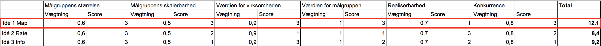

Vi har interviewet John Pedersen, som har været tidligere bruger af Republikken, men befinder sig et i et nyt kontorfællesskab.
Del 1
Del 2
Experience map
De tanker og erfaringer vi har foretaget, baseret på interviewet med John og udleveret data fra Republikken.
Overblik for experience map
Farvekoder for data
Tema om det sociale
Tema om servicen
Tema om siddepladser
Business Model Canvas
MÅLGRUPPEBESKRIVELSE
Den primære målgruppe for vores app er folk, der selv har startet en mindre virksomhed, og som har valgt Republikken som arbejdssted. Vi forestiller os at målgruppen enten har fast, flex eller connect-plads i Republikken, og derfor ofte er at finde på matriklen. Målgruppen er interesseret i at skabe relationer på tværs af fagområder. De er seriøse, men sociale, og “bruger” hinanden fagligt såvel som socialt. De mødes nu og da til en kop kaffe, når de lige kan finde hinanden i den labyrint, som Republikken jo er.
Vores sekundære målgruppe består typisk af freelancere, samt andre der kunne finde på svinge vejen forbi Republikken i arbejdsøjemed. De er på stedet for det sociale, samt for at få sparring med andre freelancere/selvstændige. Da de ikke har adgang til hele bygningen, er det lidt begrænset, hvor mange andre på Republikken, de lige umiddelbart kan skabe kontakt med. De føler, de mangler et værktøj til at skabe kontakten med andre medlemmer, uden at de nødvendigvis behøver at sende en mail til vedkommende - især hvis de bare gerne ville drikke en kop kaffe over et enkelt fagligt spørgsmål.
PERSONA
Persona 1
Adriana er 36 år, og fra spanien, og er derfor engelsktalende. Hun flyttede til Danmark i sine unge år, og bor nu på Islands Brygge med sin mand og sine to børn. Ardriana elsker at være kreativ og bruger meget af sin fritid på at fotografere samt tegne og male. Hun er meget æstetisk og er meget fascineret af den skandinaviske rene og simple stil. Hun elsker at være social med sin familie og sine venner, og er meget glad for at lære nye mennesker at kende. Adriana er uddannet indretningsarkitekt, og har i mange år arbejdet som freelance indretningsarkitekt hos forskellige større firmaer, både internationalt og i Danmark. Lige nu arbejder hun sammen med en partner med en arkitektuddannelse, og de er igang med at skabe deres eget brand hvor de designer luksuslejligheder. De har et kontor sammen på Republikken hvor de sidder til dagligt og udvikler på deres projekter. Hun drømmer om sit eget firma med mange ansatte og håber på at kunne få internationalt gennembrud.
Person 2
Morten en 35årig mand der bor i København på Vesterbro med sin kæreste og deres søn. Han er opvokset i Lyngby og sin far og mor Uddannelse inden grafisk designer og art director, som han har studeret på Danmarks medie og journalisthøjskole. I 10 år har han arbejdet for store og små reklamebureau i stor København hvor han har beskæftigede sig mest inden for grafisk design og reklame industri samt i journalistik og socialt iværksætteri. Efter det ville han godt havde lidt mere frihed i sin tilværelse og besluttede sig for at blive freelancer. Det har snart været det i 1 år hvor han har sin dagligdag på republikken. Her er der ingen chefer og han kan selv vælge sine opgaver. Når han ikke arbejder bruger morten sin fritid på at være sammen med sin kæreste og deres søn på 2 år. Specialiteter: Grafisk design, kunstretning, fotografi, illustration, magasindesign, typografi, kommunikation.
BURNDOWN CHART
VIDEO
PAIN POINT
Med udgangspunkt i vores experience map, ser vi følgende problem og dermed pain point:
Bedre socialt og fagligt fællesskab
Storyboards
Idé 1
Idé 2
Idé 3
Feature set og aktiviteter
Idé 1: Interaktiv plantegning
Aktiviteter
Log in
Oprette sig som bruger
Tilkendegive sin tilstedeværelse
Vise sin tilgængelighed
Se plantegning over bygningen
Andre profiler
Logge sig ud
Feature set:
opret bruger-knap, log ind med republik profil/facebook/linkedin
maps, gps, folk/profiler man kan trykke på tilgængelighed, hvor man er, billede, brugernavn, beskæftigelse
Log-ud knap
Idé 2: Giv hjælp og få point
Aktiviteter
Log in
Oprette sig som bruger
Brug for hjælp
Læs om problemet
Giv hjælp
Giv point for hjælp
Se egen profil
Egne point
Se beskeder
Feature set:
Log in med email, log in med telefon, skriv adgangskode, opret en bruger
Vælg billede, fornavn, efternavn, mobilnummer, email, kompetancer, om mig
Andre profiler, hjælp-opslag
Profilen som har brug for hjælp, beskrivelse af problem, billeder af problem, besvar problem
Skriv besked
Læs modtaget besked, giv point for hjælp
Profil billede, antal point, skriv hjælp-opslag, beskeder, egne point
Andre profiler (som har givet point), point i det hele, dato for pointgivningen
Samtaler, sidste besked sendt/modtaget
Idé 3: Wiki/News
Aktiviteter
Startside - Oprette sig som bruger
Søge på forskellige kategorier (information, eventkalender, booking af mødelokaler, plantegning over bygning, etc. )
Tjekke newfeed/dagens news
Wiki+news knapper i bunden så man kan navigere rundt på sitet
Give sine egne informationer eller spørgsmål videre ved at dele sit eget opslag
Feature set:
Opret ny bruger-knap Login med eksisterende bruger
Søgemaskine funktion
Push-beskeder/notifikationer
Navigationsbar+tilbageknap
Opret Opslag
Papirprototype
Idé 1: Interaktiv plantegning
Idé 2: Giv hjælp og få point
Idé 3: Søg info og se events
Test af papirprototype
Idé 1
Idé 2
Idé 3
Indsamling af data
Vi har testet vores papirprototyper i form af en tænkehøjttest, hvoraf Rasmus Juby fra A holdet udførte testen. Vi valgte Rasmus, fordi han ikke har kendsskab til vores papirprototyper samt idéer, men også er sat ind i casen.
Data-mining
Udpluk af citater
udvælg de mest interessante
Idé 1
Rasmus Juby Rosbæk, 00:42: “Jeg kan se jeg allerede er tjekket ind“ “ikke helt endnu du ska lige trykke“ “når tjekket ind står der bare her inde“
Rasmus Juby Rosbæk, 01:25: “Kortet er det over bygningen eller?“
Rasmus Juby Rosbæk, 02.43: “Der kan jeg godt blive lidt forvirret med etagen må jeg nok indrømme“
Idé 2
Rasmus Juby Rosbæk, 00:43: “Her har vi Nanna og Bo.. Med et 4-tal og et 7-tal oppe i højre hjørne, som jeg godt kan være lidt i tvivl om.“
Rasmus Juby Rosbæk, 01:16: “Jeg er stadig i tvivl om det 4-tal der.“
Rasmus Juby Rosbæk, 02.20: “Nu begynder det at give mening med tallene der. Det er en form for rating, de har fået, tænker jeg.“
Rasmus Juby Rosbæk, 02.31: “Jeg er faktisk lidt nysgerrig på hjemknappen her, hvis jeg må prøve den.“ "Okay, det er hjemsiden. Okay"
Idé 3
Rasmus Juby Rosbæk,01:17: “Den tror jeg lige jeg vil dele“
Rasmus Juby Rosbæk, 01:26: “Så tror jeg gerne jeg vil søge, hvis det er muligt. Okay man skal bare skrive, der kommer ikke noget“
Kodning af data
Citater sættet i tema og grupperes
Data kodning
Grupper/temaer som vi synes er interessante
Indsigter og løsninger
På basis af alle vores tests - er der nogen mønstre? F.eks. Problemer med “forklaring af app” eller “brandert-skalaen”? Dette kan omskrives til indsigter - eksempelvis: “Promillesatserne på brandert-skalaen er svære for brugerne at relatere til” “Snaldret, tipsy og basket beskriver dårligt hvor fuld man er…”
Benchmarking

Udfra de forskellige udvælgelseskriterier, vælger vi at gå videre med Idé 1, da idéen har opnået flest point.